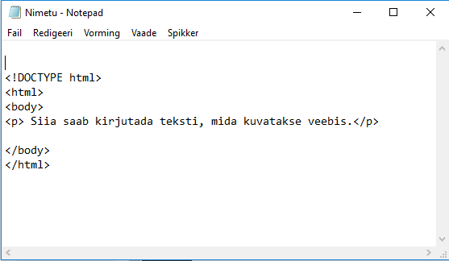
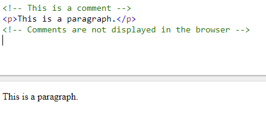
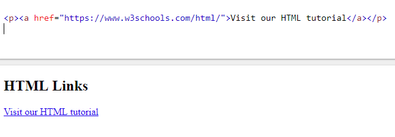

HTML Basics
- HTML on HyperText Markup Language hüperteksti märgistuskeel, milles märgendatakse veebilehti.
- HTML koosneb elementidest, mille järgi kuvab brauser dokumendi sisu.
- HTML märgendid on ümbritsetud noolsulgudega "<>"
- HTML märgendid käivad enamasti paaris: on alustav märgend ja sulgev märgend "/"
Vaata Lisaks
Kus kirjutada HTML'i
HTML'i saab kirjutada igas tavalises tekst dokumendis (Notepad). Alljärgnevalt on näha, kuidas tuleks alustada HTML koodi kirjutamist.
Vaata Lisaks
HTML Comments
HTML koodi kirjutades on võimalus kirjutada kommentaare nii, et neid ei näidata veebilehel.
Vaata Lisaks
HTML Lingid
HTLM'i lingid on hüperlingid. Neile saab peale vajutada ja siis viib ta lingitud lingile.
Vaata Lisaks